일반기계기사 (2015-09-19 기출문제)
1과목: 재료역학
1. 그림과 같이 지름과 재딜이 다른 3개의 원통을 끼워 조합된 구조물을 만들어 강판사이에 P의 압축하중을 작용시키면 ①번 림의 재료에 발생되는 응력(σ1)은? (단, E1, E2, E3 와 A1, A2, A3는 각각①, ②, ③번의 세로잔성계수와 단면적이다.)
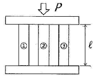
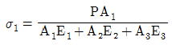
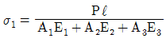
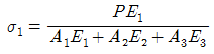
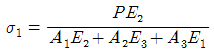
(정답률: 58%)

2. 사각단면의 폭이 10cm 이고 높이가 8cm 이며, 길이가 2m인 장주의 양 끝이 회전형으로 고정되어 있다. 이 장주의 좌굴하중은 약 몇 kN인가? (단, 장주의 세로탄성계수는 10GPa 이다.)
- 67.45
- 106.28
- 186.88
- 257.64
(정답률: 61%)
3. 원통형 코일스프링에서 코일 반지름 R, 소선의 지름 d, 전단탄성계수 G라고 하면 코일 스프일 한 권에 대해서 하중 P가 작용할 때 비틀림 각도 ø를 나타내는 식은?
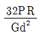
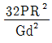
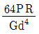
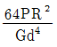
(정답률: 46%)
4. 그림과 같은 균일단면을 갖는 부정정보가 단순 지지단에서 모멘트 Mo를 받는다. 단순 지지단에서의 반력 Ra는? (단, 굽힘강성 EI는 일정하고, 자중은 무시한다,)
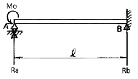
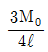
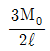
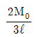
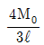
(정답률: 45%)
5. 그림과 같은 외팔보가 균일분포하중 w를 받고 있을 때 자유단의 처짐 δ는 얼마인가? (단, 보의 굽힘 강성 EI는 일정하고, 자중은 무시한다.)
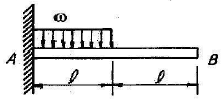
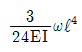
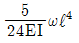
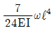
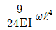
(정답률: 41%)
6. 그림과 같은 보에 C에서 D까지 균일분포하중 ω가 작용하고 있을 때, A점에서 반력 RA 및 B점에서의 반력 RB는?
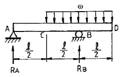
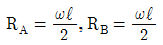
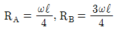
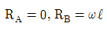
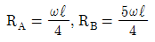
(정답률: 63%)
7. 보에서 원형과 정사각형의 단면적이 같을 때, 단면계수의 비 Z1/Z2는 약 얼마인가? (단, 여기에서 Z1은 원형 단면의 단면계수, Z2는 정사각형 단면의 단면계수이다.)
- 0.531
- 0.846
- 1.258
- 1.182
(정답률: 51%)
8. 직사각형[b×h] 단면을 가진 보의 곡률(1/p)에 관한 설명으로 옳은 것은?
- 폭(b)의 2승에 반비례 한다.
- 폭(b)의 3승에 반비례 한다.
- 높이(h)의 2승에 반비례 한다.
- 높이(h)의 3승에 반비례 한다.
(정답률: 58%)
9. 균일 분포하중 ω=200N/m가 작용하는 단순 지지보의 최대 굽힘응력은 몇 MPa인가? (단, 보의 길이는 2m이고 폭×높이=3cm×4cm인 사각형 단면이다.)
- 12.5
- 25.0
- 14.9
- 17.0
(정답률: 53%)
10. 원형 단면축이 비틀림을 받을 때, 그 속에 저장되는 탄성 변형에너지 U는 얼마인가? (단, T : 토크, L : 길이, G : 가로탄성계수, IP : 극관성모멘트, I : 관성모멘트, E : 세로탄성계수)
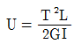
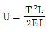
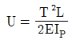
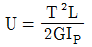
(정답률: 62%)
11. 보네 작용하는 수직전단력을 V, 단면 2차 모멘트는 I, 단면 1차 모멘트는 Q, 단면폭을 b라고 할 때 단면에 작용하는 전단응력(
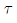
)의 크기는? (단, 단면은 직사각형이다.)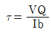
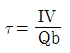
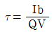
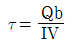
(정답률: 60%)
12. 그림과 같은 분포하중을 받는 단순보의 m-n단면에 생기는 전단력의 크기는 얼마인가? (단, q=300N/m이다.)
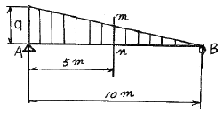
- 300N
- 250N
- 167N
- 125N
(정답률: 33%)
13. 지름이 d인 연강환봉에 인장하중 P가 주어졌다면 지름 감소량(δ)은? (단, 재료의 탄성계수는 E, 포아송 비는 v이다.)
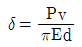
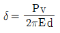
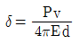
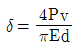
(정답률: 56%)
14. 그림과 같이 축방향으로 인장하중을 받고 있는 원형 단면봉에서 θ의 각도를 가진 경사단면에 전단응력(τ)과 수직응력(σ)이 작용하고 있다. 이 때 전단응력 τ가수직응력 σ의 1/2이 되는 경사단면의 경사각(θ)은?
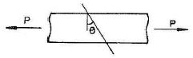
- θ=tan-1(1/2)
- θ=tan-1(1)
- θ=tan-1(2)
- θ=tan-1(4)
(정답률: 41%)
15. 그림과 같이 지름이 다른 두 부분으로 된 원형축에 비틀림 토크(T) 680N∙m가 B점에 작용할 때, 최대 전단응력은 얼마인가? (단, 전단탄성계수 G=80GPa이다.)
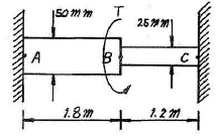
- 19.0MPa
- 38.1MPa
- 50.6MPa
- 25.3MPa
(정답률: 26%)
16. 단면적이 30cm2, 길이가 30㎝인 강봉이 축반향으로 압축력 P=21kN을 받고 있을 때, 그 봉속에 저장되는 변형 에너지의 값은 약 몇 N∙m 인가? (단, 강봉의 세로탄성계수는 210GPa 이다.)
- 0.085
- 0.1⑤
- 0.135
- 0.195
(정답률: 59%)
17. 폭이 2㎝이고 높이가 3㎝인 직사각형 단면을 가진 길이 50㎝의 외팔보의 고정단에서 40㎝되는 곳에 800N의집중 하중을 작용시킬 때 자유단의 처짐은 약 몇 ㎛ 인가?(단, 외팔보의 세로 탄성계수는 210 GPa 이다.)
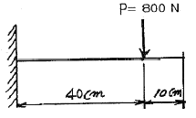
- 0.074
- 0.25
- 1.48
- 12.52
(정답률: 39%)
18. 지름 10㎜ 인 환봉에 1kN의 전단력이 작용할 때 이 환봉에 걸리는 전단응력은 약 몇 MPa인가?
- 6.36
- 12.73
- 24.56
- 32.22
(정답률: 61%)
19. 지름 2㎝, 길이 20㎝인 연강봉이 인장하중을 받을 때 길이는 0.016㎝ 만큼 늘어나고 지름은 0.0004㎝ 만큼 줄었다. 이 연강봉의 포아송 비는?
- 0.25
- 0.3
- 0.33
- 4
(정답률: 61%)
20. 반원 부재에 그림과 같이 0.5R지점에 하중 P가 작용할 때 지지점 B에서 반력은?
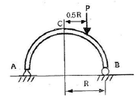
- P/4
- P/2
- 3P/4
- P
(정답률: 55%)
2과목: 기계열역학
21. 이상기체의 엔탈피가 변하지 않는 과정은?
- 가역단열과정
- 비가역단열과정
- 교축과정
- 정적과정
(정답률: 49%)
22. 어느 이상기체 1kg을 일정 체적 하에 20℃로부터 100℃로 가열하는데 836kJ의 열량이 소요되었다. 아 가스의 분자량이 2라고 한다면 정압비열은?
- 약 2.09kJ/kg℃
- 약 6.27kJ/kg℃
- 약 10.5kJ/kg℃
- 약 14.6kJ/kg℃
(정답률: 36%)
23. 증기터빈으로 질량 유량 1kg/s, 엔탈피 h1=3500kJ/kg의 수증기가 들어온다. 중간 단에서 h2=3100kJ/kg의 수증기가 추출되며 나머지는 계속 팽창하여 h3=2500kJ/kg 상태로 출구에서 나온다면, 중간 단에서 추출되는 수증기의 질량 유량은? (단, 열손실은 없으며, 위치 에너지 및 운동 에너지의 변화가 없고, 총 터빈 출력은 900kW이다.)
- 0.167kg/s
- 0.323kg/s
- 0.714kg/s
- 0.886kg/s
(정답률: 23%)
24. 열역학 제 2법칙에 대한 설명 중 틀린 것은?
- 효율이 100%인 열기관은 얻을 수 없다.
- 제 2종의 영구 기관은 작동 물질의 종류에 따라 가능하다,
- 열릉 스스로 저온의 물질에서 고온의 물질로 이동하지 않는다.
- 열기관에서 작동 물질리 일을 하게 하려면 그보다 더 저온인 물질이 필요하다.
(정답률: 56%)
25. 튼튼한 용기에 안에 100kPa,30℃의 공기가 5kg들어있다. 이 공기를 가열하여 온도를 150℃로 높였다. 이 과정 동안에 공기에 가해 준 열량을 구하면? (단, 공기의 정적 비열 및 정압 비열은 각각 0.717kJ/kg∙K 와1.004kJ/kg∙K이다.)
- 86.0kJ
- 120.5kJ
- 430.2kJ
- 602.4kJ
(정답률: 53%)
26. 이상기체의 등온 과정에서 압력이 증가하면 엔탈피는?
- 증가 또는 감소
- 증가
- 불변
- 감소
(정답률: 49%)
27. 절대온도가 T1, T2인 두 물체 사이에 열량 Q가 전달될 때 이 두물체가 이루는 계의 엔트로피 변화는? (단, T1>T2이다.)
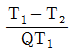
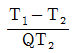
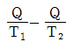
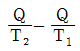
(정답률: 43%)
28. 시스템의 경계 안에 비가역성이 존재하지 않는 내적 가역과정을 온도-엔트로피 선도 상에 표시하였을 때, 이과정 아래의 면적은 무엇을 나타내는가?
- 일량
- 내부에너지 변화량
- 열전달량
- 엔탈피 변화량
(정답률: 49%)
29. 정압비열이 0.931kJ/kg∙K이고, 정적비열이 0.666kJ/kg∙K 인 이상기체를 압력 400kPa,온도 20℃로서 0.25kg을 담은 용기의 체적은 약 몇 m3 인가?
- 0.0213
- 0.0265
- 0.0381
- 0.0485
(정답률: 58%)
30. 기체의 초기압력이 20kPa,초기체적이 0.1m3 인 상태에서부터 “PV=일정” 인 과정으로 체적이 0.3m3로 변했을 때의 일량은 약 얼마인가?
- 2200J
- 4000J
- 2200kJ
- 4000kJ
(정답률: 33%)
31. 분자량이 28.5인 이상기체가 압력 200kPa,온도 100℃ 상태에 있을 때 비체적은? (단, 일반기체상수=8.314 kJ/kmol∙K 이다.)
- 0.146kg/m3
- 0.545kg/m3
- 0.146m3/kg
- 0.545m3/kg
(정답률: 46%)
32. 고온 측이 20℃, 저온 측이 -15℃인 Carnot 열 펌프의 성능계수(COPH)를 구하면?
- 8.38
- 7.38
- 6.58
- 4.28
(정답률: 49%)
33. 밀폐 단열된 방에 다음 두 경우에 재하여 가정용 냉장고를 가동시키고 방안의 편균온도를 관찰한 결과 가장 합당한 것은?
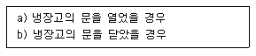
- a), b) 경우 모두 방안의 평균온도는 감소한다.
- a), b) 경우 모두 방안의 평균온도는 상승한다.
- a), b) 경우 모두 방안의 평균온도는 변하지 않는다.
- a)의 경우는 반안의 평균온도는 변하지 않고 b)의 경우는 상승한다.
(정답률: 47%)
34. 피스톤-실린더 장치 안에 300kPa, 100℃의 이산화탄소 2kg이 들어있다. 이 가스를 PV1.2=constant인 관계를 만족하도록 피스톤 위에 추를 더해가며 온도가 200℃가 될 때 까지 압축하였다. 이과정 동안의 열전달량은 약 몇 kJ인가? ( 단, 이산화탄소의 정적비열(Cv)=0.653kJ/kg∙K이고, 정압비열(Cp)=0.842 kJ/kg∙K이며, 각각 일정하다.)
- -189
- -58
- -20
- 130
(정답률: 33%)
35. 이상 냉동기의 작동을 위해 두 열원이 있다. 고열원이 100℃이고, 저열원이 50℃이라면 성능계수는?
- 1.00
- 2.00
- 3.3
- 6.46
(정답률: 59%)
36. -10℃와 30℃ 사이에 작동되는 냉동기의 최대 선능계수로 적합한 것은?
- 8.8
- 6.6
- 3.3
- 2.8
(정답률: 59%)
37. 이상기체의 폴리트로프(polytrope) 변화에 대한 식이PVn=C 라고 할 때 다음의 변화에 대하여 표현이 틀린 것은?
- n=0 일 때는 정압변화를 한다.
- n=1 일 때는 등온변화를 한다.
- n=∞ 일 떄는 정적변화를 한다.
- n=k 일 때는 등온 및 정압변화를 한다, (단, k=비열비이다.)
(정답률: 58%)
38. 실제 가스터빈 사이클에서 최고온고가 630℃이고, 터빈효율이 80% 이다. 손실 없이 단열팽창 한다고 가정했을 때의 온도가 290℃라면 실제 터빈 출구에서의 온도는? (단, 가스의 비열은 일정하다고 가정한다.)
- 348℃
- 358℃
- 368℃
- 378℃
(정답률: 33%)
39. 밀폐용기에 비내부에너지가 200kJ/kg인 기체 0.5kg이 있다. 이 기체를 용량이 500W 인 전기가열로 2분 동안 가열한다면 최종상태에서 기체의 내부에너지는? (단, 열량은 기체로만 전달된다고 한다.)
- 20kJ
- 100kJ
- 120kJ
- 160kJ
(정답률: 50%)
40. 클라우지우스(Clausius)의 부등식이 옳은 것은? (단, T는 절대온도, Q는 열량을 표시한다.)
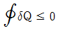
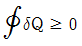
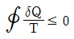
(정답률: 61%)
3과목: 기계유체역학
41. 물의 높이 8㎝와 비중 2.94인 액주계 유체의 높이 6㎝를 합한 앚력은 수은주 (비중 13.6)높이의 약 몇 ㎝에 상당하는가?
- 1.03
- 1.89
- 2.24
- 3.06
(정답률: 54%)
42. 선운동량의 차원으로 옳은 것은? (단, M : 질량, L : 길이, T : 시간이다.)
- MLT
- ML-1T
- MLT-1
- MLT-2
(정답률: 49%)
43. 비중이 0.65인 물체를 물에 띄우면 전체 체적의 몇 %가 물속에 잠기는가?
- 12
- 35
- 42
- 65
(정답률: 57%)
44. 2m×2m×2m의 정육면체로 된 탱크 안에 비중이 0.8인 기름이 가득 차 있고, 위 뚜껑이 없을 때 탱크의 옆 한면에 작용하는 전체 압력에 의한 힘은 약 몇 kN인가?
- 1.6
- 15.7
- 31.4
- 62.8
(정답률: 46%)
45. 그림과 같이 노즐이 달린 수평관에서 압력계 읽음이 0.49MPa이었다. 이 관의 안지름이 6㎝이고 판의 끝에 달린 노즐의 출구 지름이 2㎝라면 노즐 출구에서 물의 분출속도는 약 몇 m/s 인가? (단, 노즐에서의 손실은 무시하고, 관마찰계수는 0.025로 한다.)
- 16.8
- 20.4
- 25.5
- 28.4
(정답률: 18%)
46. 다음 △P, L, Q, p변수들을 이용하여 만든 무차원수로 옳은 것은? (단, △P : 압력차, p : 밀도, L : 길이 Q : 유량)
(정답률: 46%)
47. 그림과 같은 원통 주위의 포텐셜 유동이 있다. 원통 표면상에서 살유 유속과 동일한 유속이 나타나는 위치(θ)는?
- 0°
- 30°
- 45°
- 90°
(정답률: 32%)
48. 다음중 유선(stream line)에 대한 설명으로 옳은 것은?
- 유체의 흐름에 있어서 속도 백터에 대하여 수직한 방향을 갖는 선이다.
- 유체의 흐름에 있어서 유동잔면의 중심을 연결한 선이다.
- 유체의 흐름에 있어서 모든 점에서 접선 방향이 속도 벡터의 방향을 갖는 연속적인 선이다.
- 비정상류 흐름에서만 유동의 특성을 보여주는 선이다.
(정답률: 54%)
49. 비중 0.8의 알콜이 든 U 자관 압력계가있다. 이압력계의 한 끝은 피토관의 전압부에 다른 끝은 정압부에 연결하여 피토관으로 기류의 속도를 재려고 한다. U 자관의 읽음의 차가 78.8㎜, 대기압력이 1.0266×105Pa abs, 온도21℃ 일 때 기류의 속도는? (단, 기체상수 R=287N∙m/kg∙K 이다.)
- 38.8m/s
- 27.5m/s
- 43.5m/s
- 31.8m/s
(정답률: 19%)
50. 안지름이 50㎜인 180°곡관(bend)을 통하여 물이 5m/s의 속도와 0의 계기압력으로 흐르고 있다. 물이곡관에 작용하는 힘은 약 몇 N인가?
- 0
- 24.5
- 49.1
- 98.2
(정답률: 37%)
51. 한 변이 30㎝인 윗면이 개방된 정육면체 용기에 물을 가득 채우고 일정 가속도(9.8m/s2)로 수평으로 끌 때 용기 밑면의 좌측끝단(A 부분)에서의 게이지 압력은?
- 1470N/m2
- 2079N/m2
- 2940N/m2
- 4158N/m2
(정답률: 46%)
52. 지름 5㎝인 원관 내 완전발달 층류유동에서 벽면에 걸리는 전단응력이 4Pa이라면 중심축과 거리가 1㎝인 곳에서의 전단응력은 몇 Pa인가?
- 0.8
- 1
- 1.6
- 2
(정답률: 30%)
53. 익폭 10m, 익현의 길이 1.8m인 날개로 된 비행기가 112m/s 의 속도로 날고 있다. 익현의 받음각이 1°, 양력계수 0.3526, 항력계수 0.0761 일 때 비행에 필요한 동력은 약 몇 kW 인가? (단, 공기의 밀도는 1.2173kg/m3)
- 1172
- 1343
- 1570
- 6730
(정답률: 32%)
54. 수력 기울기선과 에너지 기울기선에 관한 설명 중 틀린 것은?
- 수력 기울기선의 변화는 총 에너지의 변화를 나타낸다.
- 수력 기울기선은 에너지 기울기선의 크기보다 작거나 같다.
- 정압은 수력 기울기선과 에너지 기울기선에 모두 영향을 미친다.
- 관의 진행방향으로 유속이 일정한 경우 우차적 손실에 의한 수력 기울기선과 에너지 기울기선의 변화는 같다.
(정답률: 36%)
55. 파이프 내 유동에 대한 설명 중 틀린 것은?
- 층류인 경우 파이프 내에 중비된 염료는 관을 따라 하나의 선을 이룬다.
- 레이놀즈 수가 특정 범위를 넘어가면 유체내의 불규칙한 혼합이 증가한다.
- 입구 길이란 파이프 입구부터 완전 발달된 유동이 시작하는 위치까지의 거리이다.
- 유동이 완전 발달되면 속도분포는 반지름 방향으로 균일(uniform)하다.
(정답률: 45%)
56. 다음 중 질량 보존의 법칙과 가장 관련이 깊은 방정식은 어느 것인가?
- 연속 방정식
- 상태 방적식
- 운동량 방정식
- 에너지 방정식
(정답률: 45%)
57. 평판을 지나는 경계층 유동에서 속도 분포를 경계층 내에서 경계층 밖에서는 u=U로 가정할 때, 경계층 운동량 두께(boundary layer momentum thickness)는 경계층 두께 δ의 몇 배인가?
- 1/6
- 1/3
- 1/2
- 7/6
(정답률: 20%)
58. 간격이 10mm인 평행 평판 사이에 점성계수가 14.2poise인 기름이 가득 차 있다. 아래쪽 판을 고정하고 위의 평판을 2.5m/s인 속도로 움직일 때, 평판 면에 발생되는 전단응력은?
- 316N/cm2
- 316N/m2
- 355N/m2
- 355N/cm2
(정답률: 42%)
59. 어뢰의 성능을 시험하기 위해 모형을 만들어서 수조 안에서 24.4m/s 의 속도로 끌면서 실험하고 았다. 원형(protortpe)의 속도가 6.1m/s라면 모형과 원형의 크기 비는 얼마인가?
- 1:2
- 1:4
- 1:8
- 1:10
(정답률: 56%)
60. 로 표시되는 Bernoulli의 방정식에서 우변의 상수값에 대한 설명으로 가장 옳은 것은?
- 지면에서 동일한 높이에서 같은 값을 가진다.
- 유체 흐름이 단면상의 모든 점에서 같은 값을 가진다.
- 유체 내의 모든 점에서 같은 값을 가진다.
- 동일 유선에 대햇서는 같은 값을 가진다.
(정답률: 39%)
4과목: 기계재료 및 유압기기
61. 탄소강의 기계적 성질에 대한 설명으로 틀린 것은?
- 아공석강의 인장강도, 항복점은 탄소함유량의 증가에 따라 증가한다.
- 인장강도는 공석강이 최고이고, 연신율 및 단면수축률은 탄소량과 더불어 감소한다.
- 온도가 증가함에 따라 인장강도, 경도, 항복점은 항상 저하 한다.
- 재료의 온도가 300℃부근으로 되면 충격치는 최소치를 나타낸다.
(정답률: 54%)
62. 구상흑연 추절에서 흑연을 구상으로 만드는 데 사용하는 원소는?
- Cu
- Mg
- Ni
- Ti
(정답률: 61%)
63. 다음 중 강의 상온 취성을 일으키는 원소는?
- P
- Si
- S
- CU
(정답률: 67%)
64. 담금질한 강이 여린 성질을 개선하는 데 쓰이는 열처리법은?
- 뜨임처리
- 불림처리
- 풀림처리
- 침탄처리
(정답률: 56%)
65. 고속도강에 대한 설명으로 틀린 것은?
- 고온 및 마모저항이 크고 보통강에 비하여 고온에서 3~4배의 강도는 갖는다.
- 600℃ 이상에서도 경도 저하 없이 고속절삭이 가능하며 고온경도가 크다.
- 18-4-1형을 주조한 것은 오스테나이트와 목합탄화물의 혼합조직이다.
- 열전달이 좋아 담금질을 위한 예열이 필요없이 가열을 하여도 좋다.
(정답률: 52%)
66. 다음 중 가공성이 가장 우수한 결정격자는?
- 면심입방격자
- 체심입방격자
- 정방격자
- 조밀육방격자
(정답률: 54%)
67. 고강도 합금으로 항공기용 재료에 사용되는 것은?
- 베릴륨 동
- 알루미늄 청동
- Naval brass
- Extra Supre Duralumin(ESD)
(정답률: 70%)
68. 고체 내에서 온도변화에 따라 일어나는 동소변태는?
- 첨가원소가 일정량 초과할 때 일어나는 변태
- 단일한 고상에서 2개의 고상이 석출되는 변태
- 단일한 액상에서 2개의 고상이 석출되는 변태
- 한 결정구조가 다른 결정구조로 변하는 변태
(정답률: 60%)
69. 오스테나이트형 스테인리스강의 재표적인 강종은?
- S80
- V2B
- 18-8형
- 17-10P
(정답률: 63%)
70. 합금주철에서 특수합금 원소의 영향을 설명한 것으로 틀린 것은?
- Ni은 흑연화를 방지한다.
- Ti은 강한 탈산제이다.
- V은 강한 흑연화 방지 원소이다.
- Cr은 흑연화를 방지하고 탄화물을 안정화한다.
(정답률: 51%)
71. 작동 순서의 규제를 위해 사용되는 밸브는?
- 안전밸브
- 릴리프밸브
- 감압 밸브
- 시퀸스 밸브
(정답률: 62%)
72. 그림과 같은 무부하 회로의 명칭은 무엇인가?
- 전환밸브에 의한 무부하 회로
- 파일럿 조작 릴리프 밸브에 의한 무부하 회로
- 압력 스위치와 솔레노이드밸브에 의한 무부하 회로
- 압력 보상 가변 용량형 펌프에 의항 무부하 회로
(정답률: 44%)
73. 유압 펌프에서 토출되는 최대 유량이 100L/min 일 때 펌프 흡입측의 배관 안지름으로 가장 적합한 것은? (단, 펌프 흡입측 유속은 0.6m/s 이다.)
- 60mm
- 65mm
- 73mm
- 84mm
(정답률: 62%)
74. 크래킹 압력(cracking pressure)에 관한 설명으로 가장 적합한 것은?
- 파일럿 관로에 작용시키는 압력
- 압력 제어 밸브 등에서 조절되는 압력
- 체크 밸브, 릴리프 밸브 등에서 압력이 상승하고 밸브가 열리기 시작하여 어느 일정한 흐름의 양이 인정되는 압력
- 체크 밸브, 릴리프 밸브 등의 입구 쪽 압력이 강하하고, 밸브가 닫히기 시작하여 밸브의 누설량이 어느 규정의 양까지 감소했을 때의 압력
(정답률: 62%)
75. 주로 펌프의 흡입구에 설치되어 유압작동동유의이물질을 제거하는 용도로 사용하는 기기는?
- 배플(baffle)
- 블래더(bladder)
- 스트레이너(strainer)
- 드레인 플러그(drain plug)
(정답률: 64%)
76. 밸브의 전환 도중에서 과도적으로 생긴 밸즈 포트간의 흐름을 의미하는 유압 용어는?
- 인터플로(interflow)
- 자유 흐름(free flow)
- 제어 흐름(controlled flow)
- 아음속 흐름(subsonic flow)
(정답률: 66%)
77. 그림의 유압회로는 시퀸스 밸브를 이용한 시퀸스 회로이다. 그림의 상태에서 2위치 4포트 밸브를 조작하여 두 실린더를 작동시킨 후 2위치 4포트 밸브를 조작하여 두 실린더를 다시 작동시켰을 때 두 실린더의 작동 순서 (ⓐ~ⓓ)로 올바른 것은? (단, ⓐ, ⓑ는 A 실린더의 운동방향이고, ⓒ, ⓓ는 B 실린더의 운동방향이다.)
- ⓐ → ⓓ → ⓑ → ⓒ
- ⓒ → ⓐ → ⓑ → ⓓ
- ⓓ → ⓑ → ⓒ → ⓐ
- ⓓ → ⓐ → ⓒ → ⓑ
(정답률: 41%)
78. 피스톤 펌프의 일반적인 특징에 관한 설명으로 옳은 것은?
- 누설이 많아 체적효율이 나쁜 편이다.
- 부품수가 적고 구조가 간간한 편이다.
- 가변 용량형 펌프로 제작이 불가능하다.
- 피스톤의 배열에 따라 사축식과 사판식으로 나눈다.
(정답률: 43%)
79. 다음 중 유압기기의 장점이 아닌 것은?
- 정확한 위치 제어가 가능하다.
- 온도 변화에 대해 안정적이다.
- 유압에너지원을 축적할 수 있다.
- 힘과 속도를 무단으로 조절할 수 있다.
(정답률: 56%)
80. 기어 펌프나 피스톤 펌프와 비교하여 베인 펌프의 특징을 설명한 것으로 옳지 않은 것은?
- 토출 압력의 맥동이 적다.
- 일반적으로 저속으로 사용하는 경우가 많다.
- 베인의 마모로 인한 압력 저하가 적어 수명이 길다.
- 카트리지 방식으로 인하여 호환성이 양호하고 보수가 용이하다.
(정답률: 53%)
5과목: 기계제작법 및 기계동력학
81. 큐폴라(cupola)의 유효 높이에 대한 설명으로 옳은 것은?
- 유효높이는 송풍구에서 장입구까지의 높이이다.
- 유효높이는 출탕구에서 송풍구까지의 높이를 말한다.
- 출탕구에서 굴뚝 끝까지의 높이를 직경으로 나눈 값이다.
- 열효율이 높아지므로, 유효높이는 가급적 낮추는 것이 바람직하다.
(정답률: 42%)
82. 주형 내에 코어가 설치되어 있는 경우 주형에 필요한 압상력(F)을구하는 식으로 옳은 것은? (단, 투영면적은 S, 주입금속의 비중량은 P, 주물의 위면에서 주입구 면까지의 높이는 H, 코어의 체적은 V이다.)
(정답률: 35%)
83. CNC 공작기계에서 서보기구의 형식 중 모터에 내장된 타코 제너레이터에서 위치를 검출하여 피드백 하는 제어 방식은?
- 개방회로 방식
- 폐쇄회로 방식
- 반 폐쇄회로 방식
- 하이브리드 방식
(정답률: 49%)
84. 피복 아크 용접봉의 피복제(flux)의 역할로 틀린 것은?
- 아크를 안정시킨다.
- 모재 표면에 산화물을 제거한다
- 용착금속의 탈산 정련작용을 한다.
- 용착금속의 냉각속도를 빠르게 한다.
(정답률: 54%)
85. 가스침탄법에서 침탄층의 깊이를 증가시킬 수 있는 첨가원소는?
- Si
- Mn
- Al
- N
(정답률: 40%)
86. 두께 2㎜, 지름이 30㎜인 구멍을 탄소강판에 펀칭할 때, 프레스의 슬라이드 평균속도 4m/min, 기계효율 η=70% 이면 소요동력[PS]은 약 얼마인가? (단, 강판의 전단저항은 25ksf/mm2, 보정계수는 1로 한다.)
- 3.2
- 6.0
- 8.2
- 10.6
(정답률: 28%)
87. 전해연마의 특징에 대한 설명으로 틀린 것은?
- 가공 변질층이 없다.
- 내부식성이 좋아진다.
- 가공면에 방향성이생긴다.
- 복잡한 형상을 가진 공작물의 연마도 가능하다.
(정답률: 61%)
88. 절삭가공할 때 유동형 칩이 발생하는 조건으로 틀린 것은?
- 절삭깊이가 적을 때
- 절삭속도가 느릴 때
- 바이트 인선의 경사각이 클 때
- 연성의 재료(구리, 알루미늄 등)를 가공할 때
(정답률: 42%)
89. 소성가공에 속하지 않는 것은?
- 압연가공
- 인발가공
- 단조가공
- 선반가공
(정답률: 60%)
90. 스핀들과 앤빌의 측정면이 뾰족한 마이크로미터로서 드릴의 웨브(web), 나사의 골지름 측정에 주로 사용되는 마이크로미터는?
- 깊이 마이크로미터
- 내측 마이크로미터
- 포인트 마이크로미터
- V-앤빌 마이크로미터
(정답률: 36%)
91. 자동차 A는 시속 60㎞로 달리고 있으며, 자동차 B는 A의 바로 앞에서 같은 방향으로 시속 80㎞로 달리고 있다. 자동차 A에 타고 있는 사람이 본 자동차 B의 속도는?
- 20㎞/h
- 60㎞/h
- -20㎞/h
- -60㎞/h
(정답률: 53%)
92. 100kg의 균일한 원통(반지름 2m)이 그림과 같이 수평면 위를 미끄럼없이 구른다. 이 원통에 연결된 스프링의 탄성계수는 450N/m, 초기 변위 x(0)=0m 이며, 초기속도는 x(0)=2m/s 일 때 변위 x(t)를 시간의 함수로 옳게 표현헌 것은? (단, 스프링은 시작점에서는 늘어나지 않은 상태로 있다고 가정한다.)
- 1.15cos(√3t)
- 1.15sin(√3t)
- 3.46cos(√2t)
- 3.46sin(√2t)
(정답률: 24%)
93. 1자유도계에서 질량은 m, 감쇠계수를 c, 스프링상수를 k라 할 때, 임펄스 응답이 그림과 같기 위한 조건은?
- c > 2√mk
- c > 2mk
- c< 4mk
- c < 2√mk
(정답률: 42%)
94. 전동기를 이용하여 무게 9800N의 물체를 속도 0.3m/로 끌어올리려 한다, 장치의 기계적 효율을 80%로 하면 최소 몇 kW의 동력이 필요한가?
- 3.2
- 3.7
- 4.9
- 6.2
(정답률: 51%)
95. 길이 l의 가는 막대가 O점에 고정되어 회전한다. 수평위치에서 막대를 놓아 수직위치에 왔을 때, 막대의 각속도는 얼마인가? (단, g는 중력거속도이다.)
(정답률: 21%)
96. 12000N의 차량이 20m/s의 속도로 평지를 달리고 있다. 자동차의 제동력이 6000N이라고 할 때, 정지하는 데 걸리는 시간은/
- 4.1초
- 6.8초
- 8.2초
- 10.5초
(정답률: 40%)
97. 고정축에 대하여 등속회전운동을 하는 강체 내부에 두 점 A, B가 있다. 축으로부터 점 A까지의 거리는 축으로부터 점 B까지 거리의 3배이다. 점 A의 선속도는 점 B의 선속도늬 몇 배인가?
- 같다.
- 1/3배
- 3배
- 9배
(정답률: 42%)
98. 무게 10kN의 해머(hammer)를 10m의 높이에서 자유 낙하시켜서 무게 300N의 말뚝을 50㎝ 박았다. 충돌한 직후에 해머와 말뚝은 일체가 된다고 볼 때 충돌 직후의 속도는 몇 m/s인가?
- 50.4
- 20.4
- 13.6
- 6.7
(정답률: 35%)
99. 다음 중 감쇠 형태의 종류가 아닌 것은?
- hysteretic damping
- Coulomb damping
- viscous damping
- critical damping
(정답률: 36%)
100. 스프링 정수 2.4N/㎝인 스프링 4개가 병렬로 어떤 물체를 지지하고 있다. 스프링의 변위가 1㎝라면 지지된 물체의 무게는 몇 N인가?
- 7.6
- 9.6
- 18.2
- 20.4
(정답률: 53%)